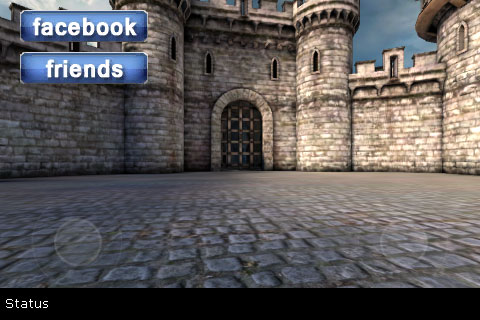
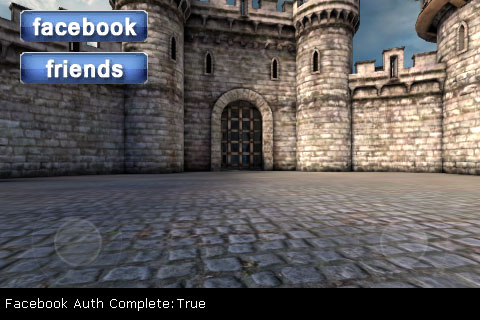
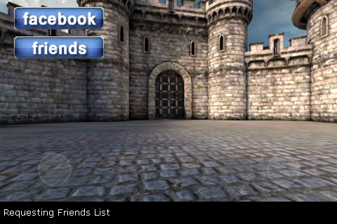

UDN
Search public documentation:
FacebookIntegrationCH
English Translation
日本語訳
한국어
Interested in the Unreal Engine?
Visit the Unreal Technology site.
Looking for jobs and company info?
Check out the Epic games site.
Questions about support via UDN?
Contact the UDN Staff
日本語訳
한국어
Interested in the Unreal Engine?
Visit the Unreal Technology site.
Looking for jobs and company info?
Check out the Epic games site.
Questions about support via UDN?
Contact the UDN Staff
Facebook 集成
概述
FacebookIntegration
FacebookIntegration 类包含可以与 Facebook 连接并进行交互的基类。它由 PlatformInterfaceBase 继承而来并利用了这个类中包含的代理系统。每个平台（PC、iOS 等等）具有它自己的子类，通过 FacebookIntegration 扩展而来，可以针对特定平台提供实现方法。
属性
- AppID - 要将游戏链接到的 Facebook 应用程序的 ID。它可以通过在Facebook 的开发者站点上设置应用程序获得。每个游戏都应该在
DefaultEngine.ini配置文件中指定这个值。 - Username - 保存通过验证程序获得的玩家用户名称。
- Username - 保存通过验证程序获得的玩家 Facebook ID。
- AccessToken - 保存通过验证程序获得的玩家的访问令牌。
- FriendsList - 可以保存玩家的好友列表的
FacebookFriends数列。- Name - 好友的显示名称。
- Id - 好友的 facebook 用户 ID。
- Init - 引擎调用用来初始化 Facebook 集成的事件。
- Authorize - 会启动允许游戏访问玩家的 Facebook 信息的程序。要求玩家授予 Facebook 应用程序许可。
- IsAuthorized - 会返回该程序是否已经通过玩家的验证。
- WebRequest [URL] [Verb] [Payload] [Tag] [bRetrieveHeaders] [bForceBinaryResponse] - 会使用指定的数据向给定 URL 发送通用网络请求。通过
FID_WebRequestComplete代理调用做出回应。- URL - 这个请求的 URL 可以是 http 或 https（前提是当前平台可以支持发送 https）
- Verb - 制定请求类型的字符串 ("POST", "GET")。
- Payload - 在网页请求中作为有效负载发送的字符串（例如，UTF8）。
- bRetrieveHeaders - 如果该项为 TRUE，那么这个回应对象将会包含所有头文件（使用 false 将会明显减少内存扰动。
- bForceBinaryResponce - 如果该项为 TRUE，那么这个回应永远不会转换为一个字符串，并且存储在二进制回应数据中。
- FacebookRequest [GraphRequest] - 发送一个 Facebook GraphAPI 请求。通过
FID_FacebookRequestComplete代理调用做出回应。- GraphRequest - 要进行的请求，例如
"me/friends"。请参阅Facebook GraphAPI 文档资料了解更多信息。
- GraphRequest - 要进行的请求，例如
- FacebookDialog [Action] [ParamKeysAndValues] - 打开一个平台对话框执行一个 Facebook 操作，例如，张贴玩家的墙。
- Action - 要打开的对话框类型（例如，“馈源”）。
- ParamKeysAndvalues - 指定要传递给对话框的额外参数（根据对话框不同传递不同的参数）的字符串数列。单独的键值对： < "key1", "value1", "key2", "value2" >
- Disconnect - 调用它会与 Facebook 断开连接。下次进行验证的时候，会再次显示验证网页。
EFacebookIntegrationDelegate 枚举变量会为可以接收回调函数的代理类型定义 ID。可以平台界面代理系统将代理赋给每个 ID。
- FID_AuthorizationComplete - 赋给该 ID 的代理会在接收到验证程序的回应时执行。
- bSuccessful - TRUE。
- Data - 其中不包含数据。
- FID_FacebookRequestComplete - 赋给该 ID 的代理会在接收到 Facebook GraphAPI 的回应时执行。
- bSuccessful - TRUE。
- Data - 包含 GraphAPI 请求的回应字符串。
- FID_WebRequestComplete - 赋给该 ID 的代理会在接收到网络请求的回应时执行。
- bSuccessful - TRUE。
- Data - 包含网络请求的回应字符串。
- FID_DialogComplete - 赋给该 ID 的代理会在接收到网络请求的回应时执行。
- bSuccessful - 如果该项为 TRUE，对话框成功执行。否则，对话框会被取消或者执行失败。
- Data - 其中包含对话框中的回应字符串（如果存在），例如，返回 URL 或错误消息。
- FID_FriendsListComplete - 赋给该 ID 的代理会在接收到玩家的好友请求的回应时执行。
- bSuccessful - 如果该项为 TRUE，表明请求成功。
- Data - 其中不包含数据。 好友列表保存在
FriendsList数列中
实现具体细节
- 如果您还没有 Facebook 应用程序，那么通过 Facebook 开发者站点创建您的 Facebook 应用程序。
- 2.在您的
UDKGameOverrides.plist文件中添加一个CFBundleURLTypes项处理 Facebook 中的回调函数。<key>CFBundleURLTypes</key> <array> <dict> <key>CFBundleURLSchemes</key> <array> <string>fb[FacebookAppID]</string> </array> </dict> </array>[FacebookAppID]应该使用您的应用程序 ID 进行替换。 - 在
DefaultEngine.ini文件的[FacebookIntegration]项中，使用您的 Facebook 应用程序的 ID 设置AppID属性。 如果您需要扩大许可范围，也请在这里列出来，一行写一个。[FacebookIntegration] AppID=[FacebookAppID] +Permissions=email +Permissions=read_stream
[FacebookAppID]应该使用您的应用程序 ID 进行替换。请参阅https://developers.facebook.com/docs/reference/api/permissions/了解可以得到的许可。 - 4.通过调用
PlatformInterfaceBase类的静态GetFacebookIntegration() 引用 FacebookIntegration对象并为验证、网络请求和 GraphAPI 请求回调函数设置您的代理，通常是在PostBeginPlay()或其他一些初始化函数中，具体情况取决于您放置 Facebook 功能的位置。var FacebookIntegration Facebook; ... Facebook = class'PlatformInterfaceBase'.static.GetFacebookIntegration(); Facebook.AddDelegate(FID_AuthorizationComplete, OnFBAuthComplete); Facebook.AddDelegate(FID_FacebookRequestComplete, OnFBRequestComplete); Facebook.AddDelegate(FID_WebRequestComplete, OnWebRequestComplete);
OnFBAuthComplete、OnFBRequestComplete和OnWebRequestComplete恰好就是例子。它们可以是与PlatformInterfaceDelegate代理署名相匹配的任何函数的名称。delegate PlatformInterfaceDelegate(const out PlatformInterfaceDelegateResult Result);
- 当用户希望启用 Facebook 功能时，如果用户还没有进行验证那么请在
FacebookIntegration对象上调用Authorize()（通过调用IsAuthroized()进行检查），然后等待FID_AuthorizationComplete回调函数。if (!Facebook.IsAuthorized()) { if (Facebook.Authorize() == true) { bIsFBAuthenticating = true; } return; } - 只要验证成功后，您就可以使用
WebRequest()或FacebookRequest()提出请求并在您的回调代理中处理它们。Facebook.FacebookRequest("me/friends");
UDKBase\Classes 目录的 CloudPC.uc 脚本中找到，可以通过使用 CloudGame 游戏类型进行测试。
示例
CloudGame Facebook 示例更高级的实现方法。Facebook 功能在一个移动菜单中实现的，这个菜单包含两个按钮，它们允许用户分别启用 Facebook 集成然后后得到一个有关他们的好友的列表。好友会显示在滚动列表中，在这里可以选择好友，而且这个菜单中包含一个状态栏，它可以显示所执行的操作的文本输出结果。
注意： 这个示例使用了移动菜单技术指南的自定义输入示例中的类。在这里就不再对这些类进行说明了。
由显示一个自定义移动菜单来开始这个示例：

点击 "Facebook" 按钮开始验证过程，切换到设备上的 Facebook 应用程序（或者如果没有安装该程序，就切换到 Safari 中的 Facebook 站点）： 用户同意后，会将他们重新定向返回到游戏，其中的状态已经更新，表明验证成功：
用户同意后，会将他们重新定向返回到游戏，其中的状态已经更新，表明验证成功：

此时点击 "Friends" 按钮将会为该用户好友列表的初始化 GraphAPI 请求：
当该请求返回时，会在菜单中将好友添加到列表，它显示为： 可以滚动该列表同时可以选择好友：
可以滚动该列表同时可以选择好友：
 在选中一个好友后，列表会关闭，然后选中的好友会在菜单的状态栏中消失：
在选中一个好友后，列表会关闭，然后选中的好友会在菜单的状态栏中消失：
移动菜单
class SocialMenu extends UDNMobileMenuScene;
/** 引用 Facebook 对象 */
var FacebookIntegration Facebook;
/** 我们要使用 facebook 进行验证吗？ */
var bool bIsFBAuthenticating;
/** 我们已经申请好友了吗（因为我们不希望每次想要查看他们的时候都发送申请）*/
var bool bFriendsListPopulated;
/**
* 调用它初始化菜单并创建场景
*/
function InitMenuScene(MobilePlayerInput PlayerInput, int ScreenWidth, int ScreenHeight, bool bIsFirstInitialization)
{
Super.InitMenuScene(PlayerInput, ScreenWidth, ScreenHeight, bIsFirstInitialization);
//初始化列表
List.InitMenuObject(PlayerInput, self, ScreenWidth, ScreenHeight, bIsFirstInitialization);
//引用 Facebook 对象单例模式
Facebook = class'PlatformInterfaceBase'.static.GetFacebookIntegration();
//将代理设置为用于验证和 GraphAPI 请求回调（我们所使用不是网络请求）
Facebook.AddDelegate(FID_AuthorizationComplete, OnFBAuthComplete);
Facebook.AddDelegate(FID_FacebookRequestComplete, OnFBRequestComplete);
//为我们的菜单对象（按钮、列表等等）创建一些代理
UDNMobileMenuButton(FindMenuObject("Authorize")).OnClick = AuthorizeFacebook;
UDNMobileMenuButton(FindMenuObject("Friends")).OnClick = RequestFriends;
List.OnChange = OnSelectFriend;
List.OnCancel = HideFriendsList;
}
/**
* 在关闭菜单清理场景的时候进行调用
*/
function bool Closing()
{
//在菜单关闭的时候清除所有代理
Facebook.ClearDelegate(FID_AuthorizationComplete, OnFBAuthComplete);
Facebook.ClearDelegate(FID_FacebookRequestComplete, OnFBRequestComplete);
return super.Closing();
}
/**
* 通过 "Authorize" 按钮的 OnClick 代理回调 - 执行 Facebook 验证过程
*
* 不使用这些参数 - 在这个实例中需要它们只是因为它与 UDNMobileMenuButton 的 OnClick 代理相匹配
*/
function AuthorizeFacebook(UDNMobileMenuObject Sender, float X, float Y)
{
//我们以前已经验证过了吗？
if (!Facebook.IsAuthorized())
{
//发送进行验证
UDNMobileMenuLabel(FindMenuObject("Status")).Caption = "Facebook Not Authorized";
if (Facebook.Authorize() == true)
{
UDNMobileMenuLabel(FindMenuObject("Status")).Caption = "Facebook Is Authorizing";
bIsFBAuthenticating = true;
}
}
else
{
//将状态设置为已验证
UDNMobileMenuLabel(FindMenuObject("Status")).Caption = "Facebook Authorized";
}
}
/**
* 通过 "Friends" 按钮的 OnClick 代理回调 - 发送 Facebook GraphAPI 请求成为该用户的好友
*
* 不使用这些参数 - 在这个实例中需要它们只是因为它与 UDNMobileMenuButton 的 OnClick 代理相匹配
*/
function RequestFriends(UDNMobileMenuObject Sender, float X, float Y)
{
//我们以前已经申请过好友了吗？
if(!bFriendsListPopulated)
{
//向 graphAPI 发送申请获取好友列表
UDNMobileMenuLabel(FindMenuObject("Status")).Caption = "Requesting Friends List";
Facebook.FacebookRequest("me/friends");
}
else
{
//显示以前填充的好友列表
List.bIsHidden = false;
}
}
/**
* 在选中一个选项后通过该列表回调 - 设置状态栏标签的文本并关闭列表。
*
* @item - 保存在列表中选中的好友的名称
*/
function OnSelectFriend(int Idx, string Item, float X, float Y)
{
UDNMobileMenuLabel(FindMenuObject("Status")).Caption = item;
list.bIsHidden=true;
}
/**
* 在点击“cancel（取消）”按钮后通过列表回调 - 关闭列表
*/
function HideFriendsList()
{
list.bIsHidden=true;
}
/**
* 通过 Authorize() 回调
*
* @Result - 保存通过验证发送回来的数据
*/
function OnFBAuthComplete(const out PlatformInterfaceDelegateResult Result)
{
//设置状态表明验证成功
UDNMobileMenuLabel(FindMenuObject("Status")).Caption = "Facebook Auth Complete:"$Result.bSuccessful;
bIsFBAuthenticating = false;
}
/**
* 通过 GraphAPI 请求回调
*
* @Result - 保存通过该请求发送回来的数据
*/
function OnFBRequestComplete(const out PlatformInterfaceDelegateResult Result)
{
local JsonObject Root, FriendsArray, Friend;
local int Index;
if (Result.bSuccessful)
{
//将状态设置为请求成功
UDNMobileMenuLabel(FindMenuObject("Status")).Caption = "Facebook Request Successful";
//通过该请求获取数据
Root = class'JsonObject'.static.DecodeJson(Result.Data.StringValue);
// 获取好友数列 - 最高级别是“data（数据）” = [friend,friend]
FriendsArray = Root.GetObject("data");
//将好友的数量输出到状态中
UDNMobileMenuLabel(FindMenuObject("Status")).Caption = "You have " $ FriendsArray.ObjectArray.length $ " friends:";
// 在好友上循环
for (Index = 0; Index < FriendsArray.ObjectArray.length; Index++)
{
// 获取一个好友对象
Friend = FriendsArray.ObjectArray[Index];
// 输出好友信息
UDNMobileMenuLabel(FindMenuObject("Status")).Caption = "Friend " $ Friend.GetStringValue("name") $ " has ID " $ Friend.GetStringValue("id");
//将新好友添加到该列表中
List.AddItem(Friend.GetStringValue("name"));
}
//显示该列表
List.bIsHidden = false;
bFriendsListPopulated = true;
}
else
{
//将状态设置为请求未成功
UDNMobileMenuLabel(FindMenuObject("Status")).Caption = "Facebook Request Unsuccessful";
}
}
defaultproperties
{
//验证按钮
Begin Object Class=UDNMobileMenuButton Name=AuthorizeButton
Tag="Authorize"
Left=20
Top=10
Width=128
Height=32
TopLeeway=20
Images(0)=Texture2D'PlatformInterfaceContent.fb_label'
Images(1)=Texture2D'PlatformInterfaceContent.fb_label'
ImagesUVs(0)=(bCustomCoords=true,U=0,V=0,UL=128,VL=32)
ImagesUVs(1)=(bCustomCoords=true,U=0,V=0,UL=128,VL=32)
End Object
MenuObjects.Add(AuthorizeButton)
//好友按钮
Begin Object Class=UDNMobileMenuButton Name=FriendsButton
Tag="Friends"
Left=20
Top=52
Width=128
Height=32
TopLeeway=20
TextFont=Font'EngineFonts.SmallFont'
Images(0)=Texture2D'PlatformInterfaceContent.fb_friends'
Images(1)=Texture2D'PlatformInterfaceContent.fb_friends'
ImagesUVs(0)=(bCustomCoords=true,U=0,V=0,UL=128,VL=32)
ImagesUVs(1)=(bCustomCoords=true,U=0,V=0,UL=128,VL=32)
End Object
MenuObjects.Add(FriendsButton)
//状态栏标签
Begin Object class=UDNMobileMenuLabel name=Label0
Tag="Status"
Height=32
Width=480
Left=0
Top=288
TextFont=Font'EngineFonts.SmallFont'
BackgroundColors(0)=(R=0.0,G=0.0,B=0.0,A=1.0)
BackgroundColors(1)=(R=0.0,G=0.0,B=0.0,A=1.0)
CaptionColors(0)=(R=1.0,G=1.0,B=1.0,A=1.0)
CaptionColors(1)=(R=1.0,G=1.0,B=1.0,A=1.0)
Caption="Status"
End Object
MenuObjects.Add(Label0)
//好友列表
Begin Object class=UDNMobileMenuList name=List0
Tag="FriendsList"
bIsHidden=true
bHasCancel=true
Title="Friends"
End Object
List=List0
}
PlayerController
class SocialPC extends SimplePC;
event InitInputSystem()
{
Super.InitInputSystem();
MPI.OpenMenuScene(class'SocialMenu');
}
defaultproperties
{
InputClass=class'GameFramework.MobilePlayerInput'
}
Gametype
class SocialGame extends SimpleGame;
defaultproperties
{
PlayerControllerClass=class'UDNGame.SocialPC'
}